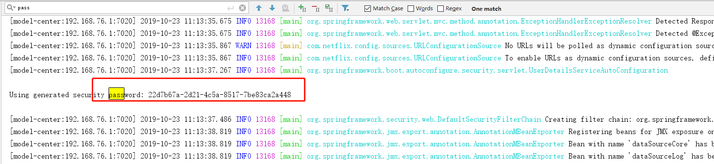

原文连接:https://www.cnblogs.com/pm0101/p/pm0101.html
# Eureka错误解决方法
## security.basic.enabled 配置过时或不可用
默认情况下：
用户名：user
密码：启动应用在控制台会输出，如下图：

也可以通过如下属性配置：
spring.security.user.name
spring.security.user.password
如果想要关闭验证功能：
简单粗暴方法：
把 Security包从pom.xml中移出去
科学一点的：
在Application启动类上（或者任意@Configure配置类上）增加如下注解：
~~~ java
@EnableAutoConfiguration(exclude = { org.springframework.boot.autoconfigure.security.servlet.SecurityAutoConfiguration.class})
~~~
## defaultZone 配置
> eureka 中心与服务需要配置一样的地址
## 禁用Eureka作为客户端注册
~~~ java
eureka.client.register-with-eureka=false
eureka.client.fetch-registry=false
~~~
## 超时问题
com.netflix.hystrix.exception.HystrixRuntimeException: api timed-out and no fallback available. 超时问题
或者 Read timed-out 错误
在 yml中加入
~~~ java
hystrix:
command:
default:
execution:
isolation:
thread:
timeoutInMilliseconds: 16000
~~~
或者
~~~ java
hystrix:
metrics:
enabled: true
command:
default:
execution:
isolation:
thread:
timeoutInMilliseconds: 16000
~~~
## 包引用
~~~ java
<!--这个依赖千万不能省略-->
<dependency>
<groupId>org.springframework.cloud</groupId>
<artifactId>spring-cloud-starter-eureka</artifactId>
</dependency>
~~~